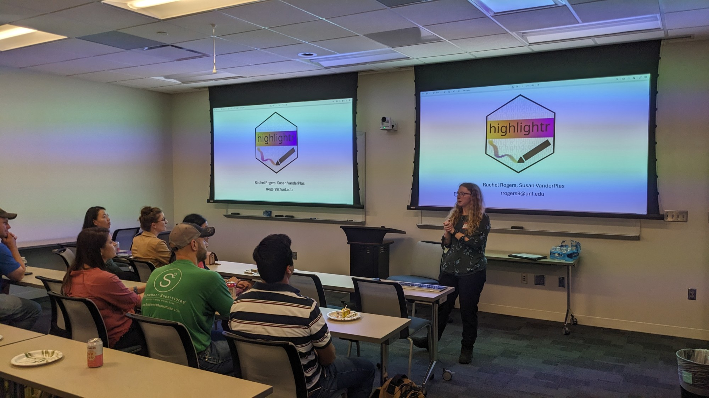
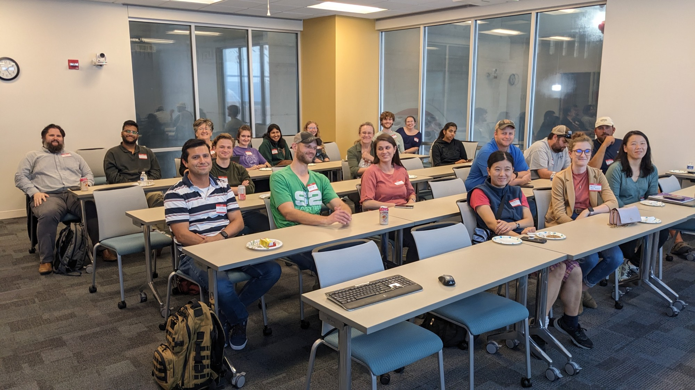

Jeffrey Stevens, organizer of the Nebraska R User Group, recently spoke with the R Consortium about his efforts to establish a vibrant R community across Nebraska. Jeffrey shared insights into the group’s activities, including fostering connections between academics, industry professionals, and nonprofits, and creating a hybrid model to engage participants from across the state. He also discussed his passion for package development, open science initiatives like the Many Dogs Project, and the challenges of building an inclusive R ecosystem in a geographically dispersed region.

Please share your background and involvement with the RUGS group.
I am a professor of psychology at the University of Nebraska-Lincoln, where I lead the Canine Cognition and Human Interaction Lab. My research focuses on animals, comparative psychology, and animal cognition, a field I have been involved in since the mid-1990s.
I have been using R for over 15 years, but I initially worked with S-Plus during my graduate studies in the late 1990s. For the past 15 years, R has been my primary tool for data analysis.
In the last three years, I have also ventured into package development. To date, I have published three packages on CRAN. One package excluder is designed for data wrangling specifically tailored for survey data that psychologists often encounter. Another package flashr creates flashcard slide decks to assist learners in mastering R; it includes R functions and descriptions, allowing students to familiarize themselves with terms and functionalities. My most recent package cocoon takes statistical objects. It generates R Markdown or LaTeX text that can be easily inserted into documents, making extracting and presenting the statistics you need simpler.
I teach R to diverse learners, including undergraduates, graduate students, postdocs, lab managers, and some faculty members. Additionally, I serve as a data science mentor for Posit, guiding corporate individuals through data science training programs. In this role, I lead cohorts of employees seeking to enhance their R and data science skills. I have participated in several of these mentoring sessions, and my extensive experience with R has made it an essential part of my daily work.

What was your motivation behind starting this R User group?
I know a few people at my university who use R, but there are just a handful here and there—not many. Most of them were using it for their projects. Then, about two years ago, I discovered that there was a faculty member in the Statistics Department named Susan VanderPlas. She had joined the department a bit earlier, but that was when I first learned about her. I found out that she shared my passion for R; she is also an R user and an educator enthusiastic about building websites and engaging with the community. She was the first person at my university with whom I connected over our shared interest in R.
I proposed starting an R user group, but she initially suggested we take a different approach. Last year, instead of forming a formal user group, we contacted everyone on campus who used R. The goal was to gather and have informal monthly chats about R-related topics. During our meetings, we discussed various subjects. The first gathering occurred right after Posit::Conf, where we shared our experiences from that conference.
As we continued meeting, I realised that my original vision was establishing a dedicated user group for R enthusiasts. Susan and I started a user group after talking with others on board with the idea. I took the initiative to move forward with it, and the R consortium grant was the primary motivation that pushed us to get serious about this project. Preparing the grant proposal was what got things started. Without that grant, I’m not sure we would have progressed as far as we have.
While I’m leading this initiative, Susan is also helping out. It’s important to me that we extend our reach beyond the university. While most of my connections are within the university, I want to engage with other universities, government, and industry groups. That’s why we aim to connect with the broader community in Nebraska.
I learned there was a group in Omaha, about an hour from my location in Lincoln, Nebraska, but it has become inactive. We invited anyone from Omaha, Lincoln, and surrounding areas to join us.
Nebraska is not a very populous state. Most of the population is concentrated in Lincoln and Omaha, leaving many smaller towns with fewer residents. However, we wanted to ensure that people from these smaller areas also had the opportunity to participate, so we decided to make our initiative statewide rather than city-specific.
Traditionally, many of our user groups have focused on urban areas. Still, given Nebraska’s vast land area, creating a welcoming environment for those outside the major cities was important. Several hundred miles separate some of the smaller towns, and we want to ensure everyone feels included.
Our goal is to make as many of our meetings hybrid as possible. This way, we can include individuals in western Nebraska and other towns beyond Lincoln and Omaha. We want them to feel connected and engaged. Our first kickoff meeting was in person, but after that, we have implemented the hybrid model so that participants from all around Nebraska can join our discussions as well. It’s important to us to involve those outside the main urban centres.
Please provide details about the kick-off meeting for your group. What topics were discussed, and how did participants respond?
The kickoff meeting was fantastic. As I mentioned last year, the original group consisted of about five or six people from the university. Typically, only four of us met each month, which was relatively small. However, we had 20 people in attendance for the kickoff meeting, which was great! It was mostly folks from Lincoln; unfortunately, no one from Omaha could make it since the meeting was in person.
 Nebraska R User Group Kickoff Meeting: Rachel Rogers
I was excited about the turnout, mainly because most attendees were academics I already knew. Still, I also met a few new people from the university. Additionally, we had representatives from Nebraska Public Media and Nebraska Game and Parks, which was exciting because it included some nonprofit and governmental groups.
We did not have a specific topic to discuss, as the main goal was to spend most of the time networking. I wanted everyone to talk, make connections, and meet new people.
My main goal for the kickoff meeting was facilitating communication among the attendees. We dedicated a significant portion of time to this at the beginning and end of the meeting to ensure everyone had ample opportunity to chat. I also made introductory announcements and introduced myself, outlining what we hoped to achieve with the group.
We included a couple of lightning talks in the agenda. These were short, five-minute presentations showcasing the various projects participants had been working on. The aim was to help everyone build connections and gain insight into their peers’ work.
 Nebraska R User Group Kickoff Meeting: Participants
One graduate student discussed a package they developed based on their research, while a faculty member presented an R course they created along with its accompanying website. A representative from Nebraska Public Media shared how they utilize R in their daily operations. Lastly, I provided a brief overview of my flashcard package.
The goal was to provide a brief insight into what various people are doing from different perspectives. The event was very successful. The attendees enjoyed it; they were excited to learn about what others were doing and to get involved. Overall, I was pleased with how the kickoff meeting turned out.
Do you have a plan for this year? What is the frequency of the events you plan to host, and what topics will you cover?
I’m still working on that piece. I plan to hold these events roughly once a month during the academic year. So, starting in February, I envision having sessions in February, March, April, and May. Over the summer, we could get creative and consider doing something different instead of just talking. An in-person event could be a good option.
As mentioned, I want to involve some industry professionals. They would like to discuss the role of R in the industry and explore how people learning R can leverage their skills to seek job opportunities.
I recently attended our second meeting, which was our initial discussion. I asked the group if they wanted to share topics, ideas, or presentations. One suggestion was to have a “beginner’s night” for those with little exposure to the subject. This would help newcomers by introducing them to the basics.
User groups often contain members with varying experience levels, and it is essential to have a sense of how to cater to everyone. Our last meeting featured an advanced talk on extensions to ggplot2, specifically building geoms, which is quite complex. We want to ensure that we also engage those new to R. It’s essential that they feel included, have the opportunity to ask questions, and learn something valuable by attending the group.
I don’t have a fully developed plan yet, but I have two initial ideas I’m still working on. I aim to be as inclusive as possible, engaging participants from various experience levels and backgrounds—from the industry, academia, government, or non-profits. I want to involve everyone and see what we can achieve together.
How do I Build an R User Group?
R Consortium’s R User Group and Small Conference Support Program (RUGS) provides grants to help R groups organize, share information, and support each other worldwide. We have given grants over the past four years, encompassing over 76,000 members in over 90 user groups in 39 countries. We would like to include you! Cash grants and meetup.com accounts are awarded based on the intended use of the funds and the amount of money available to distribute